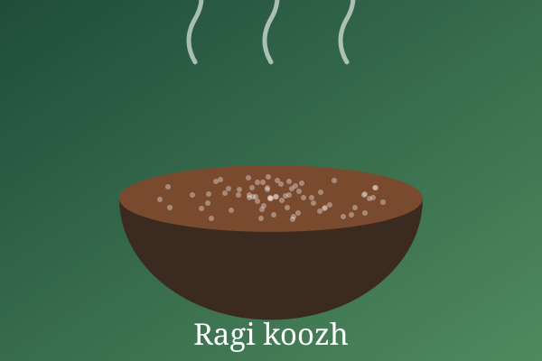

Ragi, or finger millet, is the most popular millet in the south. It has more calcium than any other common grain, which makes it a good choice for children and older adults.
Ragi flour is easy to cook with. It turns into porridge, flatbread, dosa or dumplings in minutes, and a spoonful of ghee or a glass of buttermilk goes well with every dish.
Ragi koozh
A thin, cooling porridge for breakfast or hot afternoons.
- 2 tbsp ragi flour
- 2 cups water
- Salt and buttermilk
- Chopped shallots
Mix the flour with cold water, cook on low heat until glossy, cool and add buttermilk.
Ragi adai
A crisp, savoury pancake made from ragi flour, onion, coconut and curry leaves. Cook it on a hot pan with a little oil, two minutes per side.
Ragi mudde
Soft balls of cooked ragi, eaten with sambar or greens. Stir the flour into boiling water until it forms a smooth dough, then shape it with wet hands.
Tip: sieve the flour before cooking to avoid lumps.